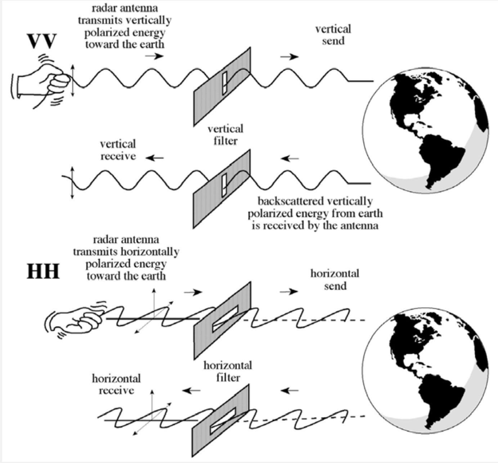
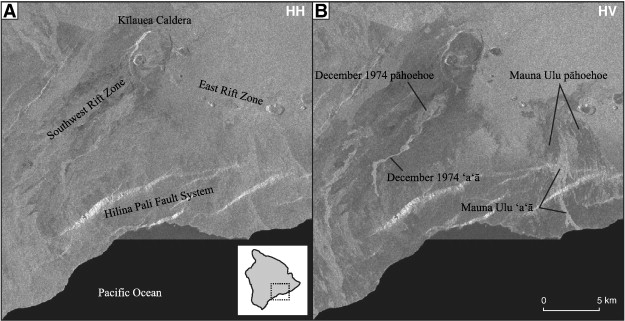
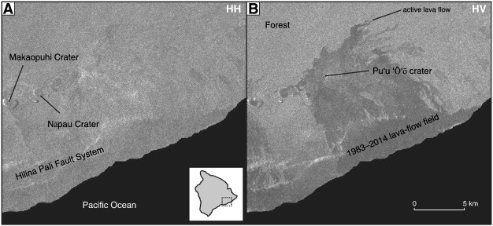
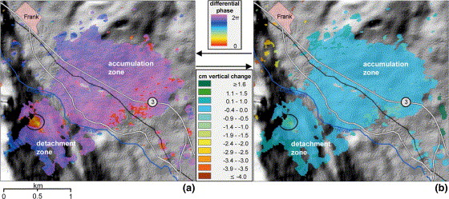

9 week_9
9.1 Summary
9.1.1 SAR Basics
SAR is a radar device, and its primary measures are the backscattered signal’s intensity (or amplitude) and phase, which are sampled in time bins along the azimuth (the direction the sensor antenna is tracking) and range (the direction of the sensor antenna is either across the track or perpendicular to it) (Team 2023).The “Synthetic Aperture” of the SAR refers to using the motion of the sensor to virtually create a large antenna (Team 2023).
SAR captures the backscattering energy of ground objects, which is related to surface roughness, complex dielectric constant and moisture of ground objects (Moreira et al. 2013). As it travels, it continuously sends and receives signals, creating detailed images of buildings, roads, and other structures, even in the absence of sunlight or through cloud cover, and is able to obtain data all day and all weather due to its long wavelength (Wu et al. 2022).
9.1.2 SAR Polarization
Polarization refers to the orientation of the electromagnetic wave, which can be vertical, horizontal, or circular. Different surfaces reflect these polarized waves differently, aiding in identifying materials and conditions.
Rough scattering (e.g. bare earth) = most sensitive to VV Volume scattering (e.g. leaves) = cross, VH or HV Double bounce (e.g. trees / buildings) = most sensitive to HH.

Figure from (“Biomass Estimation Competition” 2023)
From a student’s question during the class, comparing SAR images over time reveals structural changes: sudden shifts in VV and HH backscatter indicate damage, while gradual changes suggest construction or renovation.
9.1.3 Understanding SAR Data
SAR data’s amplitude (or backscatter) provides information about the surface properties, while the phase data helps determine the precise distance of the reflecting surface from the satellite.
9.1.4 Change Detection with SAR
Change detection in SAR involves comparing images from different times to identify changes. Directly subtracting one image from another can be misleading due to SAR’s unique properties, so statistical methods are used.
t-tests: is used to determine if there are significant differences between two sets of data, comparing SAR images of an area before and after a natural disaster using t-tests can reveal the extent of changes or damages.
Standard Deviation: measures the amount of variation or dispersion in a dataset. Analyzing the standard deviation over time across a series of images can help identify areas of high variability, indicating potential changes or unusual activities.
9.1.5 Image Fusion
Image fusion in the context of SAR and optical data integration is a process where information from both types of imagery is combined to produce a single output that contains more comprehensive information than either of the individual images.
9.1.5.1 Decision Level Fusion
After processing and analyzing both SAR and optical images independently, the information is combined to make a final decision or analysis.
9.1.5.2 Object Level Fusion
First extracting texture, shape, and other features from source images, then combining them to create new features using layer-stacking for LCC or ensemble learning (Lin et al. 2020).
9.1.5.3 Pixel Level Fusion
Direct combination of pixel values from SAR and optical images, often using sophisticated algorithms to retain important features from both. According to Kulkarni and Rege (Kulkarni and Rege 2020), it includes component substitution, transforming images and swapping structural parts with SAR data; multi-scale decomposition, breaking images into sub-bands for fusion and reconstruction; hybrid methods, combining multiple techniques for efficient fusion; and model-based methods, using sparse representation or energy optimization for fusion. Hybrid methods are preferred for their balance of low computational load and good performance.
9.1.6 Others
Principal Component Analysis (PCA): Used for reducing dimensionality and emphasizing variation, where the first principal component of the optical image can be replaced with SAR data to enhance specific features.
Intensity-Hue-Saturation (IHS) Transformation: Optical images are transformed into IHS components, and the intensity component is replaced with SAR data, enhancing structural details while retaining the color and texture information.
Wavelet Transformation: Uses wavelet decompositions to fuse the images at different scales, preserving both spatial and frequency details.
9.2 Application
SAR can be applies in Volcanology (Pinel et al. 2014). Studies on volcanic surfaces using satellite SAR have traditionally used co-polarized data (HH or VV), which transmit and receive in the same polarization. However, airborne SAR research shows that cross-polarized data (HV or VH) more effectively differentiate lava flow textures and roughness. RADARSAT-2 images from Kīlauea Volcano, Hawai’i, highlight the advantage of cross-polarized data in distinguishing between ’a’ā and pāhoehoe lava flows, and between active flows and surrounding vegetation, regardless of time or weather.

Fig.1 Co- (A) and Cross-polarized (B) Figure from (Pinel et al. 2014)
RADARSAT-2 images from July 7, 2010, show Kīlauea Volcano, revealing surface roughness differences between ’a’ā and pāhoehoe lava flows, with variations in shading best seen in cross-polarized data.

Fig. 2 Co- (A) and Cross-polarized (B) Figure from (Pinel et al. 2014)
RADARSAT-2 images from January 23, 2014, show the active lava from the Pu’u ’Ō’ō eruption, with cross-polarized data clearly delineating flow margins against the forest due to backscatter contrast.
In another study (Singhroy and Molch 2004), InSAR (Interferometric Synthetic Aperture Radar) is used to monitor and characterize landslides in the Canadian Rockies, aiding in understanding landslide mechanisms and distribution. A near-circular fringe was detected in the revised differential interferogram by the InSAR investigation (Fig. 1). The highest displacement values that correspond to this are at −1.3 cm, suggesting that the rock face may have moved gradually before the rock fall in 2001.

Fig. 3 Differential interferogram (a) and vertical elevation change (b) for ERS-1/ERS-2 data pair Aug-95/Aug-97. Values are only displayed where scene coherence exceeds 0.5. At the north end of the detachment zone, there is a remaining fringe (circled) with a matching maximum elevation change of −1.3 cm. Figure from(Singhroy and Molch 2004)
9.3 Reflection:
Through my studies, I’ve gained a comprehensive understanding of SAR’s capabilities in capturing ground object backscattering, crucial for analyzing surface roughness and changes, particularly in volcanic and landslide monitoring. Learning about SAR’s amplitude and phase aspects enriched my comprehension of how these elements are pivotal in differentiating surface features and monitoring environmental changes. The distinction between co-polarized and cross-polarized data was particularly interesting, showing how each applied in different analytical requirements, with cross-polarized data proving more effective in certain contexts. The extended learning of in-SAR which extends the capabilities of SAR by using the phase difference between two or more SAR images taken from slightly different viewpoints to create interferograms, solved the policy question from week 4, which is a very useful tool in exploring land sinking.
The concept of image fusion, integrating SAR with optical imagery, was a significant learning point. Understanding various fusion levels, from pixel to object and decision levels, has gave me better understanding of combining information and get better outputs. This comprehensive understanding helps to understand the potential of SAR in geospatial science.